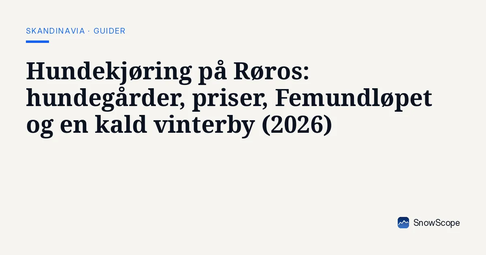

Hundekjøring på Røros: hundegårder, priser, Femundløpet og en kald vinterby (2026)
Røros, den gamle kobbergruvebygda nær svensk grense, blir et vinterhubtun for sleddehunder når kulden kommer. Platåklimaet her er alvorlig og tørt. Den 13. november registrerte værstasjonen på 630 m 11 cm snø—ikke dypt, men nok til å kjenne at vinteren har begynt og til å kjøre de første hundekjøringturer i sesongen.
Se snøprognosen for Scandinavia direkte i SnowScope-appenSnødybde, puddervarsler og 3D-kartet, gratis.

Der du finner slede og hunder
Destination Røros-nettstedet lister aktive kenneler i og rundt byen. Kennel Dølanvollen, omkring 10 minutter nord, er tydelig om hva den tilbyr: en 2-timers tur koster 2500 NOK per person, en kortere tur 1500 NOK, og barn 1000 NOK. Når snøen er knapp eller bakken bar, skifter kennelen til vognturer i stedet for sleder. Den stenger hvis termometeret faller under −20 °C, noe som skjer regelmessig her.
Fjestad Husky opererer 40 Alaskan huskier i Tufsingdalen og ble grunnlagt av en av arrangørene av Femundløpet. Lenger sør nær Tynset kjører Eywas Trails halvedagstur på omkring 2,5 timer. Alle tre tar reservasjoner på forhånd, særlig når vinteren blir dypere og dagslyset krymper.
Femundløpet i februar: hovedbegivenheten
Langdistansehundekjøringsløpet Femundløpet starter og slutter i Røros. Den lengste klassen, F650, drar fra Kjerkgata (hovedgata i denne verdenarvebygda) den 10. februar 2027. F450- og juniørklassene begynner den 11. februar, og F200 den 12. februar. Å stå i gata og se lag dra av gårde er den beste måten å se dusinvis av hunder på en gang, alle utstyrt og klar.
Hvis du planlegger å komme og se, kom tidlig. Byen fylles raskt på løpsmorgen, og parkering nær Kjerkgata blir vanskelig å finne. Startene er gratis å se og tiltrekker både lokale og besøkende.
Kulde som biter: hva platåklimaet betyr
Røros ligger på 630 m høyde i innlandet, langt fra havets mildnende effekt. Vinterkkulden her er skarp og vedvarende. Den tørre luften på fjellplatået gjør at kulden føles dypere enn termometerlesen alene tilsier. Midt i november har 11 cm snø nettopp falt; om noen uker, hvis værmønsteret holder kaldt, blir dypden større. For nå er sesongen ung og snøen er ennå tynn.
Kennelene kjenner dette landskapet godt. Kennel Dølanvollen kjører ikke under −20 °C fordi det er når risikoen for frostskader og hundebelastning blir for høy. Platået når denne kulden, så noen vinterkuker kan tvinge avlysninger eller omplanlegging. Dette er normalt for Røros i januar og februar.
Å gå med egen hund på platået
Hvis du tar med en hund til Røros, husk at reinflokker bruker regionen om vinteren og er ofte nær veier og stier. Norsk lov beskytter husdyr og ville dyr hele året; en hund må holdes i bånd der reinsdyr kan beite. Hold hunden din ved siden når du vandrer eller går omkring på platået.
På kjørte skiløyper, gå til siden og la ikke hunden din løpe i sporet selv. Hvis hunden din har kort hårlag, ta med en drakti for den dype kulden. Den tørre vinden og intense kulden på platået kan være hard for hundens poter og hud.
Timing for besøket ditt: snø og dagslys
Tidlig november er grensen. Den 13. november hadde den første virkelige snøen falt ved værstasjonen (11 cm), men sesongen var ennå veldig ung. Hvis du vil bestille en hundekjøringtur, tilbyr tidlig januar og februar bedre snødybde og en kald, stabil sesong. Prisen er kortere dagslys: solen går ned tidligere hver dag når vinteren blir dypere.
Pakk ulllag i stedet for en eneste tung jakke. Den tørre kulden biter hardere enn du forventer. Dekk ansiktet, hendene og føttene dine. Spør kennelen når du bestiller hva du skal ta med; den kjenner platået og vil gi deg råd.
Tips til skiløpere
- Bestill hundekjøringturen din på forhånd, særlig for januar og februar. Spør kennelen hva den gjør hvis temperaturen faller under −20 °C eller hvis snøen forsvinner: vognturer, omplanleggingsalternativer eller stenging.
- For Femundløpet i februar, kom tidlig til Kjerkgata på løpsmorningene (10.–12. februar 2027). Gata og parkeringen fylles fort.
- Kle deg i ulllag og dekk eksponert hud: platåkulden er tørr men intens, og kulling fra en bevegelige slede gjør at det føles hardere.
- Hvis du tar med en hund, hold den i bånd på og omkring platået for å beskytte reinflokker. Gå ved siden av kjørte løyper, ikke i sporet. Ta med en drakti for kortharede hunder om dyp vinter.
- Sjekk forhold med kenneler før du drar. Snø på 11 cm den 13. november er tidligsesongsnø; noen turer kan være på bar bakke med vognturer, eller omplanlagt til senere uker når snøen er dypere.
Om tallene
Snødybdene for skistedene er det dypeste snødekket i de øvre bakkene på datoen som vises; de er anslag for et område, ikke en måling i ett punkt. Prognoser kan endre seg. Les alltid det offisielle snøskredvarselet før du kjører utenfor preparert løype.
Siter denne rapporten
For forskning, undervisning eller presse: tallene og diagrammene kan brukes fritt under CC BY 4.0 med denne kildehenvisningen.
SnowScope (2026), Hundekjøring på Røros: hundegårder, priser, Femundløpet og en kald vinterby (2026), https://snowscope.app/blog/nb/2026/11/roros-dog-sledding-femund-winter-guide-2026.html, hentet 2026-11-14
SnowScope (Atlas Labs). (2026, November 14). Hundekjøring på Røros: hundegårder, priser, Femundløpet og en kald vinterby (2026). SnowScope snow reports. https://snowscope.app/blog/nb/2026/11/roros-dog-sledding-femund-winter-guide-2026.html
BibTeX
@misc{snowscope2026rorosdogsleddingfemundwi,
author = {{SnowScope (Atlas Labs)}},
title = {Hundekjøring på Røros: hundegårder, priser, Femundløpet og en kald vinterby (2026)},
year = {2026},
month = nov,
howpublished = {\url{https://snowscope.app/blog/nb/2026/11/roros-dog-sledding-femund-winter-guide-2026.html}},
note = {Published 2026-11-15 09:34 UTC; accessed 2026-11-14}
}· CC BY 4.0 · Metoder, data og verktøy →
Følg Scandinavia
Gratis: en melding når nysnø er på vei, og prognosen hver morgen.